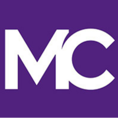
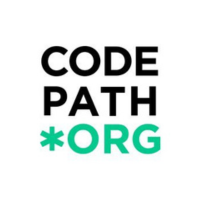

Interests
Software Engineering
I am passionate about developing innovative software that transforms lives and simplifies everyday tasks. Learning how to create solutions that not only address current challenges but also anticipate future needs excited me, making technology more intuitive and accessible for everyone .
Machine Learning & AI
I am passionate about the transformative power of artificial intelligence and machine learning. I am fascinated by the potential of these technologies to revolutionize industries, enhance decision-making, and tackle complex problems. Exploring how to develop and apply AI and ML solutions excites me as I seek to contribute to innovative advancements in these fields.
Entrepreneurship
I am passionate about exploring and learning about startups and entrepreneurship. Leveraging advanced technology tools to create successful businesses excites me. I enjoy diving into innovative ideas and discovering how they can be transformed into impactful ventures.
Education
My Education Journey
-
2019
My Humble Beginnings
When I first landed in the USA, all I had was a suitcase and a heart full of hope. Struggling with English, finances, and overwhelmed by a mountain of residency paperwork, I was fueled by a deep desire for a better life—one free from the political conflicts I had left behind. I had always dreamed of studying computers, developing innovative solutions from scratch, and applying my creativity to cutting-edge software from a young age, but don't have neither the resources or knoweldge. Determined to turn this dream into reality, I left everything behind homeland. Each step I took was guided by the belief that I could build something new.
-

2021 - 2023
Montgomery College, MD
After finishing high school with the Merit Scholastic Award, I began my studies at Montgomery College in Rockville, MD, pursuing a degree in Computer Science. At Montgomery College, I engaged in a challenging curriculum that laid a strong foundation for my Computer Science studies. I completed Java I and II, where I developed a solid understanding of object-oriented programming and software development. My coursework also included Linear Algebra and Discrete Structures, both of which enhanced my analytical and problem-solving skills essential for advanced computing concepts. Additionally, I studied C++ to further diversify my programming expertise and worked through Calculus I and II, which provided a rigorous mathematical foundation crucial for understanding algorithms and data analysis. This diverse and intensive coursework was instrumental in preparing me for the complexities of the field. Beyond academics, my leadership skills flourished. I founded the Arab Society Club. Also, I served as the Chair of the Community Service Committee on the Student Government Association, representing over 10,000 students on the Rockville campus and created numerous volunteer opportunities that benefited both the college and the surrounding community like toy drive.
-
2023 - Now
University Of Maryland
I never planned to stop learning. Instead, I chose to minor in Technology Entrepreneurship to navigate and develop the business side of myself, alongside a major in Computer Science with concentrations in Software and Machine Learning.I am currently on the Dean's List with a 3.8 GPA. My coursework has been rigorous, including subjects such as C, Assembly, and Introduction to Applied Probability and Statistics I. currently, I am taking Algorithms and Organization of Programming Languages. These challenging courses have not only expanded my technical knowledge but also strengthened my problem-solving and analytical skills, Low-Level and system Programming.
-

Summer 2024
No Time to Waste!
This summer, I joined CodePath as a cohort member in a Technical Interview Prep class. The program focuses on empowering students to excel in technical interviews and provides a preview of real-world challenges in the industry. The courses are designed to prepare students to solve challenging algorithmic problems commonly used in interviews for top companies. Additionally, in the summer of 2024, I learned SQL and the basics of HTML, CSS, and JavaScript. Moreover, I grasped machine learning concepts in Python, such as labeled and unlabeled data, practiced using Python ML libraries, and earned a certificate from Google in machine learning.
-
Learning
is a never-ending
quest!
Experience
My Career Journey
-
May 2024 - Aug 2024
Software Engineering Intern
SecureTech360, VA
During my time in ST360:
I improved software efficiency and performance by identifying and proposing solutions for challenges through detailed research and analysis of existing issues. Enhanced product quality and user experience by contributing to the development and testing of commercial apps/software through collaborative efforts with the engineering team. Empowered and educated future tech professionals by teaching programming and coding in the Cyber and Tech Youth program through engaging lessons and practical exercises.
-
July 2024 - Aug 2024
Software Engineering Fellow
Headstarter AI, Online
During my time in HeadStarter AI:
I spearheaded the development of a final project with the goal of reaching 1,000 people on the waitlist, creating 1,000 accounts, or generating $1,000 in revenue. I also built personal websites utilizing HTML, CSS, and JavaScript. As part of a team of four, I contributed to ideation, scoping, and refining our project, ultimately scrapping 90% of our initial concept. I engaged with potential users to gather feedback on ideas, iterated through paper wireframes, developed designs in Figma, and progressed to front-end development before launching the full application.
-
Feb 2024 - Present
Office Assistance
National Foreign Language Center
I facilitated office research efforts to support project development and objectives, enhancing the team’s ability to make informed decisions and achieve project goals. Additionally, I accurately and efficiently entered data into the organization's databases and information management systems, ensuring reliable and timely access to critical information for effective decision-making and project execution.

Jan 2022 - Present
Pivate STEM Tutor
Freelancer
As a private tutor specializing in Math and Computer Science, I enhanced students' understanding and performance in challenging courses such as Java, Calculus, Linear Algebra, and C. I measured progress through tailored assessments and regular feedback, resulting in an average improvement in grades by 25%. This success was achieved by helping students with their homework, addressing weak topics, preparing for exams, and designing practical exercises to reinforce their learning and build confidence.
Dream big
and dare
to fail!